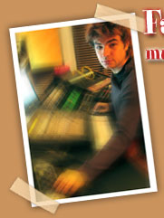

|  | |
|
Qui dit Franco-Québéquois-
New-Yorkais, n’étonne plus par : chanteur, saxophoniste, pianiste,
arrangeur, programmateur, ingénieur du son, réalisateur. |
|
|
• Compositions
pour l’image : Publishing Companies, Thundersky Pictures, Bay Networks,
Motorola, Dragon Software, Apple Computers, Siemens… Et pour des
spectacles et évènementiels: Media100, Videonics, Electric
Image, ACE Entertainement, pièce dansée pour le lever de
rideau du concert d’Harry Connick Junior et pour des spectacles de
danse… |
|
|
|
|